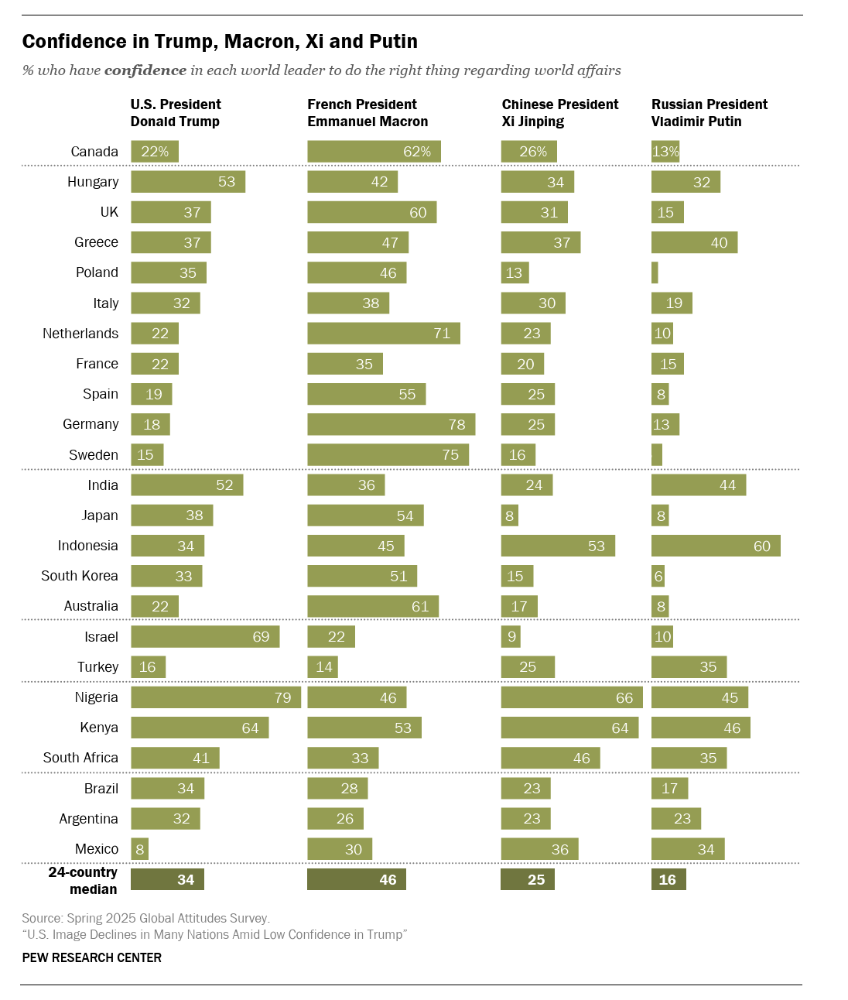

CC1 | Hosting
CC2 | Building
CC3 | Policy debate
Should Colombia prioritise policies to improve students basic mathematics skills, narrow socioeconomic achievement gaps, and strengthen educational outcomes relative to other OECD member countries?
Colombia is lagged behind some Lain American peers and the OECD average. Uneven recent progress higlights the need for policies to improve educational outcomes.
CC4 | Replicating and Improving a Chart
Original Chart

Replicated Chart
Improving Chart
I replaced four bar panels with a dot plot on a shared percentage scale, using colour to distinguish leaders and make comparisons within countries easier.
CC5 | Accessing data
API task
The chart was constructed with data from the OECD data via API. The base URL is "https://sdmx.oecd.org/public/rest/data/".
The request identifies the OECD DAC1 dataflow and its version using OECD.DCD.FSD,DSD_DAC1@DF_DAC1,1.8.
After the slash, the filter key starts with the seven G7 donor codes (CAN+FRA+DEU+ITA+JPN+GBR+USA).
The plus signs select multiple donors within the same dimension.
The rest of the filter key (._Z.11002..1160..V+Q) sets the sector to “not applicable” (_Z),
selects ODA grant equivalents as a percentage of GNI (11002), and specifies the grant-equivalent flow type (1160).
The two blank positions leave tying status and unit of measure unrestricted.
The request includes both current (V) and constant(Q) prices.
The query parameters set 2025 as the latest year (endPeriod=2025), request that all dimensions be included at the observation level (dimensionAtObservation=AllDimensions), and specify CSV as the output format (format=csvfile).
The API returns a tidy CSV in long format, with one row per donor and year. This query returns 56 observations for the seven G7 donors from 2018 to 2025.
The chart uses DONOR for the donor country, TIME_PERIOD for the year, and OBS_VALUE for ODA grant equivalents as a percentage of gross national income (GNI). Vega-Lite reads these columns directly without reshaping the data.
Full API request:
https://sdmx.oecd.org/public/rest/data/OECD.DCD.FSD,DSD_DAC1@DF_DAC1,1.8/CAN+FRA+DEU+ITA+JPN+GBR+USA._Z.11002..1160..V+Q?endPeriod=2025&dimensionAtObservation=AllDimensions